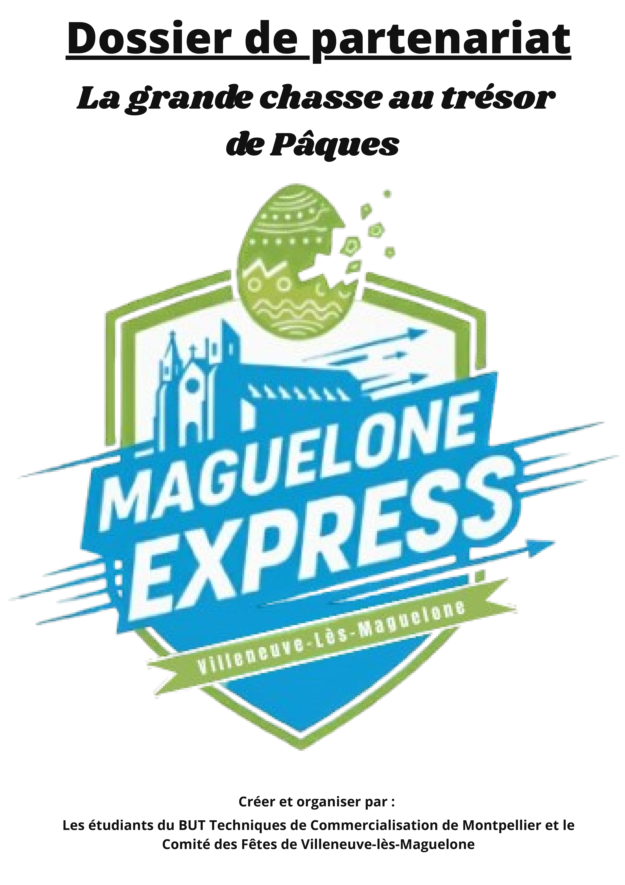
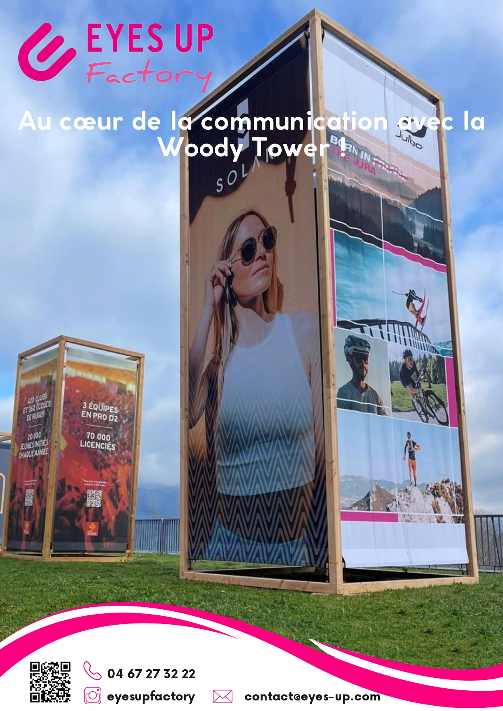

Projet en cours

Télécharger le dossier
2025 - 2026 : Projet tutoré :
Maguelone Express est un projet de groupe sur une année, en lien avec l'IUT et le comité des fêtes de Villeneuve-Lès-Maguelone.
Il aboutira en avril 2026.
Projet passé

Télécharger le rapport
Télécharger la plaquette
2024 - 2025 : SAE communication commerciale :
Cette SAE a été réalisée durant ma première année de BUT.
Notre mission était de créer des supports de communication pour une entreprise et d'analyser les supports de ses concurrents.